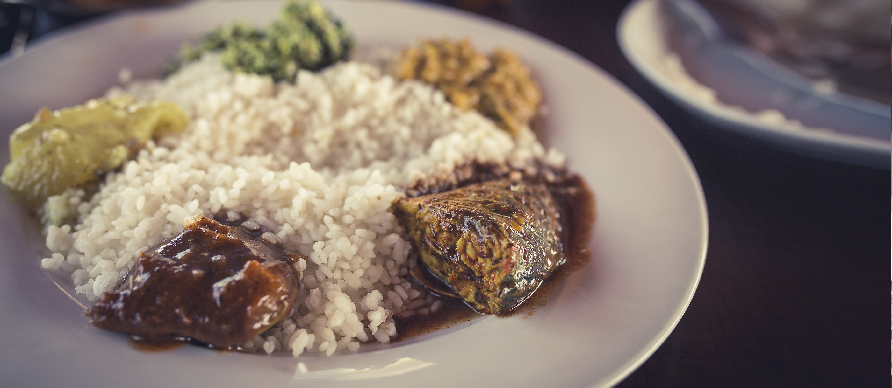

Rice and Curry

Ingredients
Ingredient 1 - Rice
Ingredient 2 - Some vegetables
Ingredient 3 - Eggs or fish
Ingredient 4 - Spices
Cooking Instructions
Step 1: Prepare the rice
Step 2: Cook the vegetable
Step 3: Boil the egg
Step 4: Add to the plate and enjoy